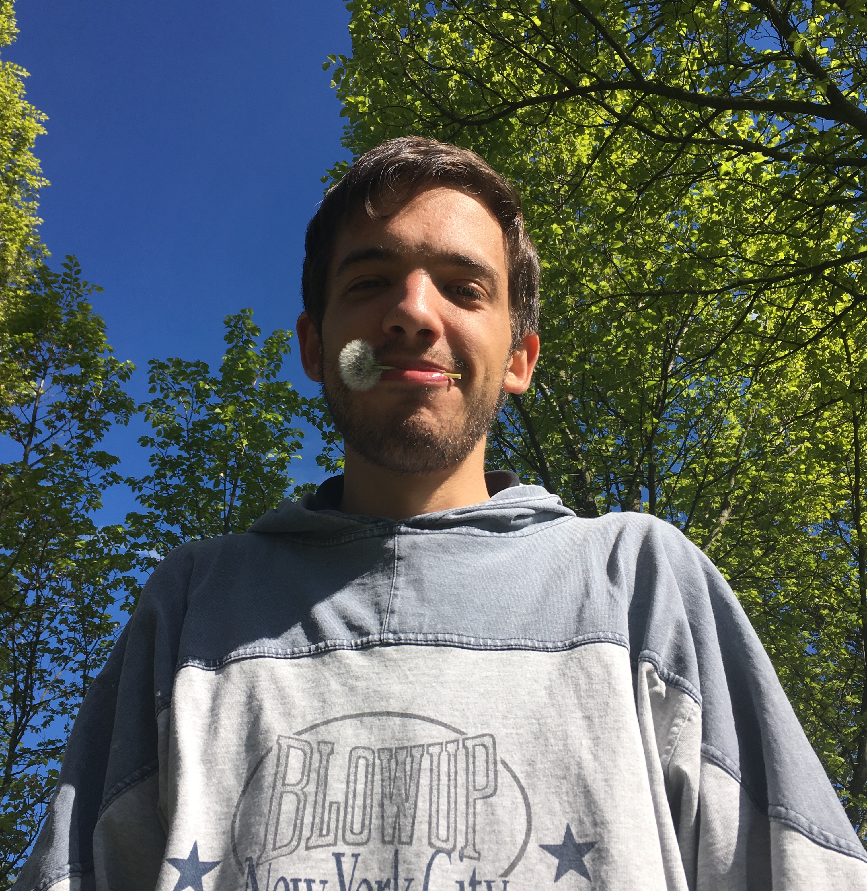

I'm a young physics student, I love trekking and writing code , taking photos and swimming .
- Need to develop a code? I'm with you!
- Want to go to mountain? Call me!
- Ever desire to stargaze? Contacts are upper in this page!
- For everything else use Google
Most interesting works
Some of by best projects are on my github profile, below my favourites.Tool for ALICE experiment at CERN
I contribute to develop alice-MTR-utils (now MTRShuttle), a set of utilities to generate plots for the muon trigger at ALICE experiment. The tool is designed so that analysis are easy, efficient and automatic.
My thesis "
Cosmic Rays
I worked on a project I Analisi di raggi cosmici attraverso un modello computazionale su Supercomputer during High school.
I developed code to make a montecarlo simulation about interaction of cosmic rays with atmoshpere. I developed code was developed using openMP to optimize the execution of the code on a multi core hardware.
My slides are at https://www.slideshare.net/
This work is referenced at my shcool website.
Coding..
Machine Learning

I'm currently working to develop a neural network written in c++
My code is under development
Mac Temperature App
I developed an app to monitor macOS hardware. Inspired by the utility MenuMeter, I tougth it would be useful to monitor the temperature of my hardware so I developed my personal app.
The project page is at: sourceforge.net/projects/macos-temperature
Bots for Telegram
I wrote BOTs with the famous messaging platform Telegram
- My code is useful to interact with a service called Have I been pwned? and can be used to discover if an email addres has been hacked somewhere
- Hardware side i wrote code to interact with Arduino's boards
Diceware
I contributed to the italian version of Diceware.
This is a list of words that can be used to generate simple, esay to remeber and effective passwords.Physics
I was interviewed about my passion of physics.
Photos
I really love taking photos, on Flickr you may find picutures. I love taking photos during my trips and my trekking and I'm passionate in astrophotograpy. Our Moon, stars, nebulas are some of my favourite objects
You may contact by email at filippo_valle@protonmail.com
I'm available on Telegram.
Linkedin: orcid.org/0000-0003-3577-8667
orcid.org/0000-0003-3577-8667